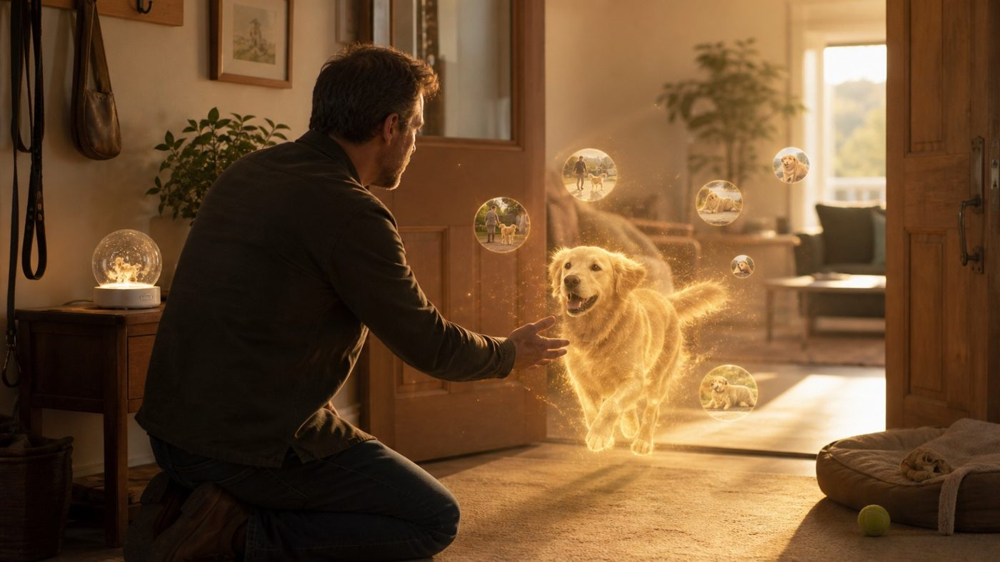

Protect
ProtectIt speaks up only when it matters, in one sentence.
ExampleIt alerts you when something is off at home, and stays quiet otherwise.
 Earthory
EarthoryEarthory understands what is happening around you and connects people, places, objects, events and moments into memory you can search, recall and verify at any time.
Everything looks normal.
A 360° sensing device you can wear, or place at home, on a desk, or in the car.
EARTHORY APPSearch, replay and organise your own memory. How you use it is your choice.
It speaks up only when it matters, in one sentence.
ExampleIt alerts you when something is off at home, and stays quiet otherwise.Search your own experience the way you search the web.
ExampleAsk what you promised in a meeting, and jump straight back to the moment.
Ordinary moments you cannot bring yourself to delete, kept as long-term memory.
ExampleA daughter's first solo ride is a story, not a pile of video files.
Every recollection carries its origin: the time, the place, who was there, what led up to it, and the original footage.
“You were on a call as you came in, put them down, and never moved them again.”
Along a timeline, people, places, moments and evidence connect into a complete experience.
Dad taught me to ride in the park.
Mum kept the smile from the moment she let go.
"The wind was soft that day, and I felt brave."
You do not need to recall the exact place or land on the right keyword. Earthory finds the related people, objects, events and moments inside your own memory.
Starting from what you actually lived, connecting the people, places, objects, events and moments in your life.
Explore the AppNot the grand milestones, but the specific moments that happen every day and slip away afterwards.

Access and encryption are handled by the device itself.
Transfer, storage and each user's data stay isolated.
Capture status is clear, and can be paused anytime.
You decide what to keep, export or delete.
Sensitive actions stay transparent and traceable.